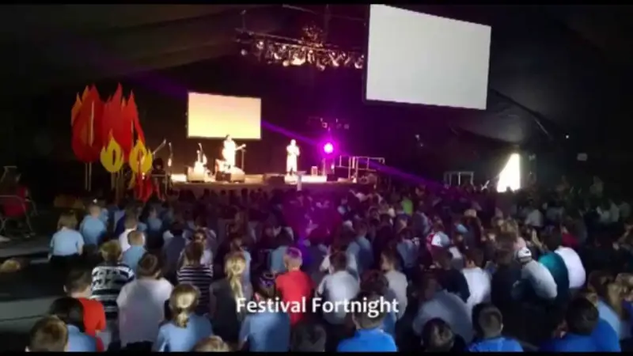
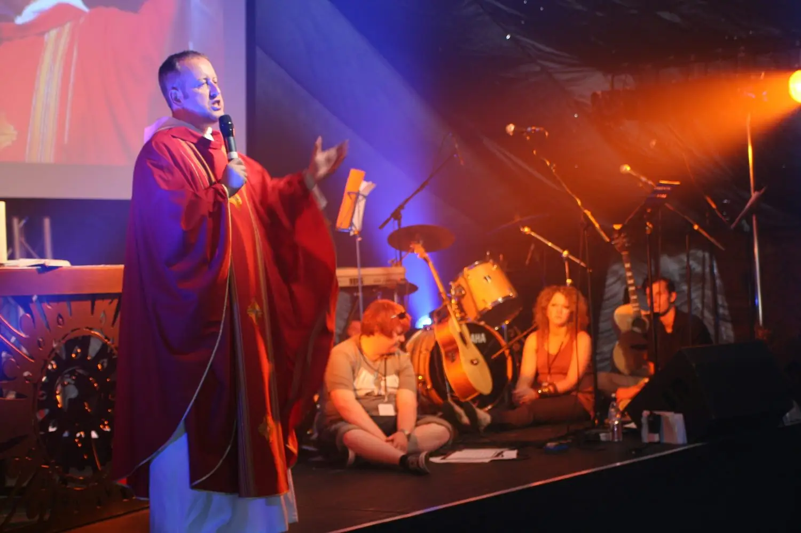
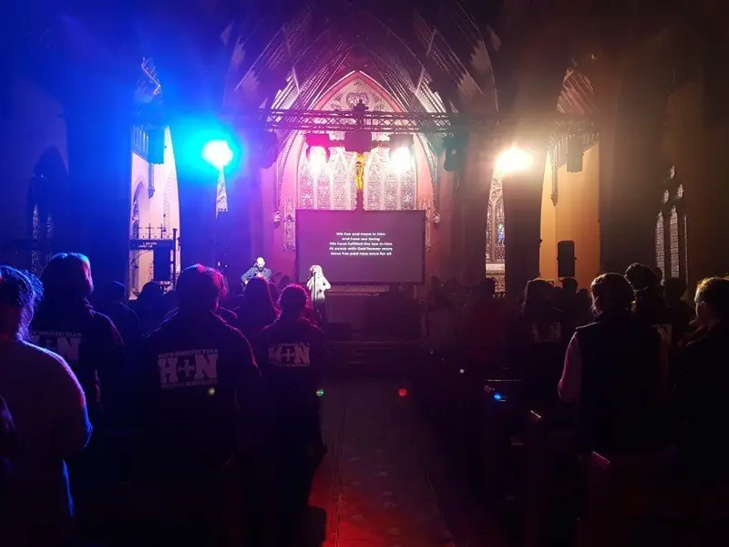
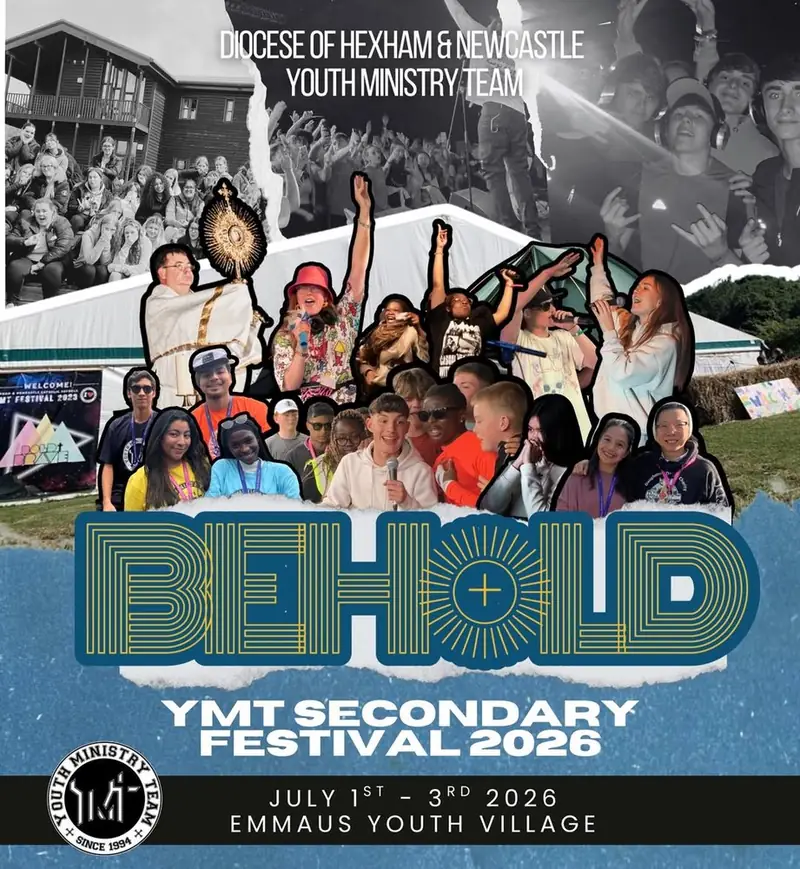
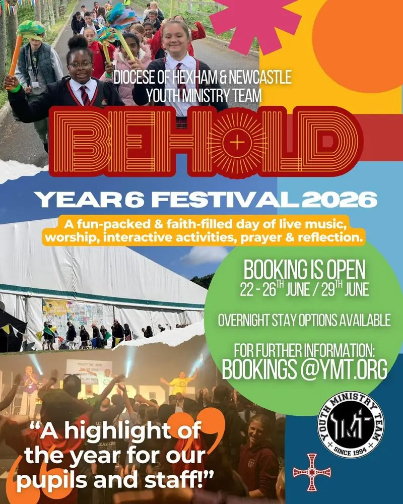
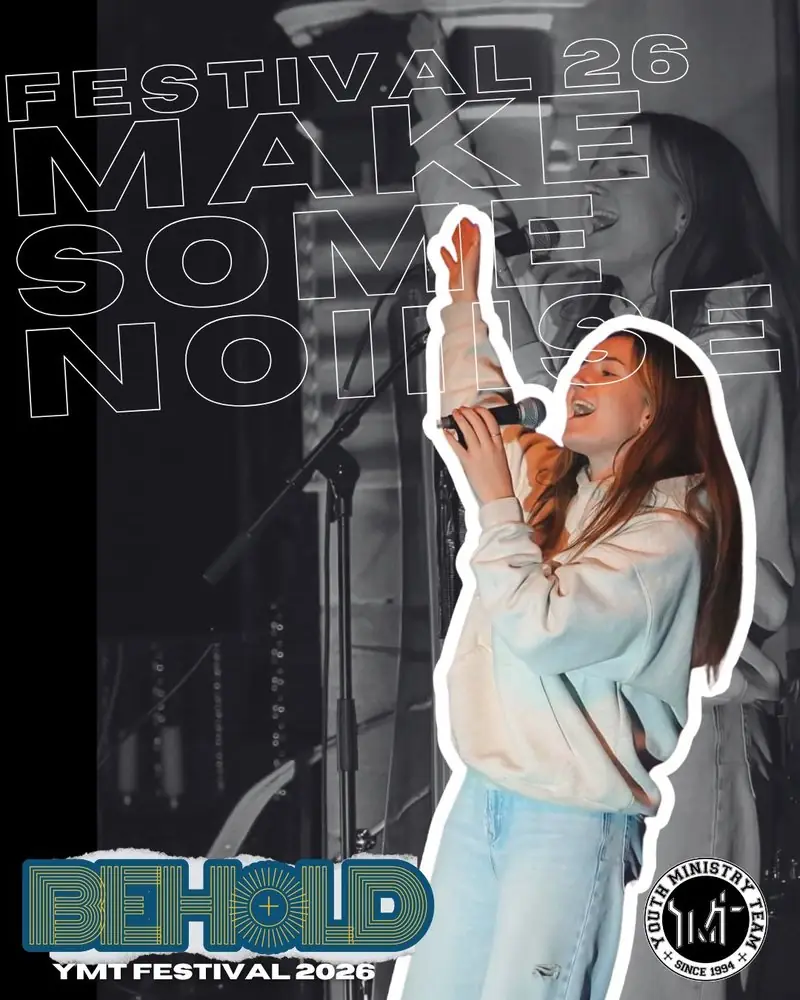
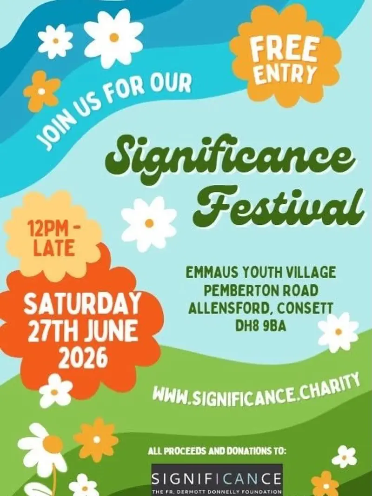

The Festival
Music, worship, speakers, prayer and sport under one marquee. It began as “God Camp” in 2001.

What happens at the Festival
Schools and parishes from across the North East fill the Village for a few days each summer.
Under the marquee there is live music and worship, speakers and testimony, prayer and the sacraments. Around it: sport, games, campfires and time with friends.
- Music, worship and speakers on the main stage
- Prayer, adoration and the sacraments
- Sport, activities and free time
- Camping at the Village
- A trained, DBS-checked team
- Where
- Emmaus Youth Village
- Who
- Year 6 and secondary schools, parishes and groups
- When
- Every summer
- Since
- 2001
Behold 2026






Next festivals
Dates are confirmed in the spring.
Book a block of places
Schools, parishes and groups book places together. Tell us roughly how many and we will hold them. Under-18s need consent from a parent or carer.